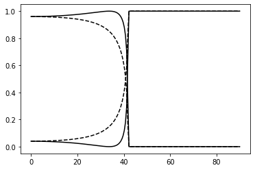

Fresnel
Fresnel reflection and transmission at an interface
import cmath
import matplotlib.pyplot as plt
import numpy as np
import scipy as sp
wavelength = 633.0
n1 = 1.5
n2 = 1.0
Fresnel coefficients
For a given incident angle, we compute the wavevectors in both media, the in-plane wavevector, the complex reflection and transmission coefficients for p and s polarisations, and return the intensity coefficients.
def fresnel(theta):
k0 = 2*np.pi/wavelength
k1 = n1 * k0
k2 = n2 * k0
k_x = k1 * cmath.sin(theta)
k1_z = np.sqrt(k1**2 - k_x**2)
k2_z = np.sqrt(k2**2 - k_x**2)
eps1 = n1**2
eps2 = n2**2
ap = k1_z / eps1
bp = k2_z / eps2
rp = (ap - bp) / (ap + bp)
tp = 2 * ap / (ap + bp)
rs = (k1_z - k2_z) / (k1_z + k2_z)
ts = 2 * k1_z / (k1_z + k2_z)
Rs = abs(rs)**2
Rp = abs(rp)**2
Ts = abs(ts)**2 * np.real(k2_z/k1_z)
Tp = 1 - Rp
return(Rp,Rs,Tp,Ts)
Loop over incident angle
We create a vector of incident angles from 0 to pi/2 (excluding exact normal incidence as the denominators blow up), and call the function defined above.
Ntheta = 180
atheta = np.linspace(0.001, np.pi/2-0.001, Ntheta)
arp = np.zeros(Ntheta)
ars = np.zeros(Ntheta)
atp = np.zeros(Ntheta)
ats = np.zeros(Ntheta)
for it in range(Ntheta):
rp,rs,tp,ts = fresnel(atheta[it])
arp[it] = rp; ars[it] = rs; atp[it] = tp; ats[it] = ts;
Plotting
atheta_deg = atheta * 180/np.pi
plt.figure()
plt.plot(atheta_deg, arp, '-k')
plt.plot(atheta_deg, ars,'--k')
plt.plot(atheta_deg, atp, '-k')
plt.plot(atheta_deg, ats, '--k')
plt.show()

We note the following features:
- p-polarisation has a minimum in reflectivity (Brewster angle)
- both polarisations yield complete reflection above ~42 degrees (total internal reflection), where the complex amplitude reflection coefficient becomes purely imaginary
- reflection at normal incidence is the same for both polarisations (as it must be, since they're both equivalent when the plane of incidence cannot be defined)
Download this page as a Jupyter notebook or as a standalone Python script.